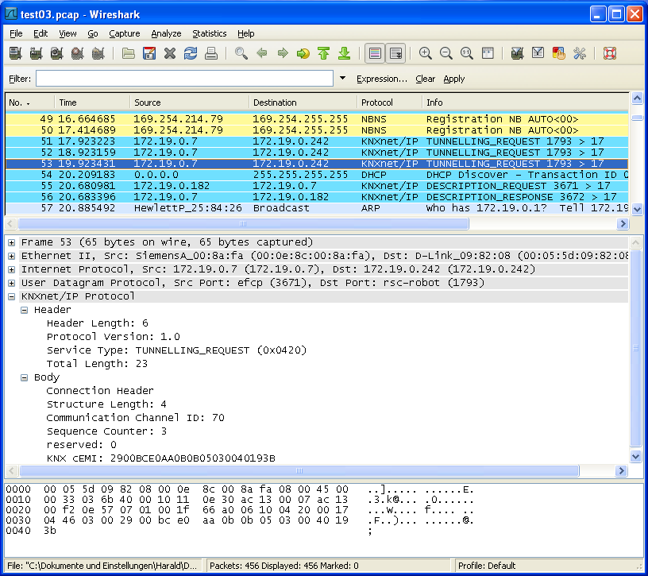

This Wireshark plugin allows to dissect KNXnet/IP packages but not the payload which means it does not dissect encapsulated cEMI frames. Current version was written and tested under WinXP Pro SP2 and Kubuntu 8.10 with Wireshark version 1.0.6. It is still in beta stage since not all possible messages which may occur were tested.
This plugin is not bounded to a dedicated TCP or UDP port. Instead, it is implemented as so called "heuristic" dissector. Every TCP and UDP packet will be analysed by this plugin. If it fulfills some criteria (like the basic structure of the header), it will be considered to be a KNXnet/IP packet and treated by the plugin.
